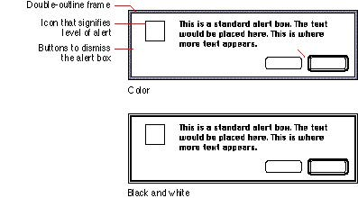

|
Alert Box AppearanceIn addition to the standard modal dialog box frame, alert boxes contain an icon that signifies the degree of severity of the alert message. Figure 6-17 shows the essential elements of an alert box. The types of alert boxes you can use are described in the sections that follow.Figure 6-17 The essential elements of an alert box  See the section "Dialog Box Messages" on page 311 in Chapter 11, "Language," for more information on writing appropriate alert box messages. |